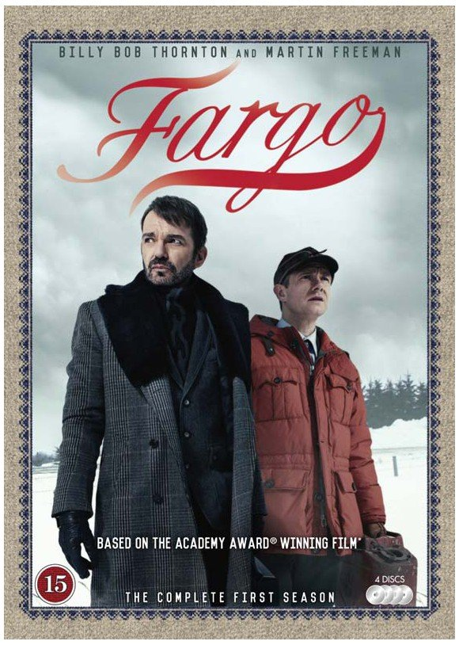

A Fargo egy Emmy- és Golden Globe-díjas amerikai krimisorozat, melyet Noah Hawley készített. A sorozat antológia
jellegű, így minden évad egy, az előzőtől független történetet mesél el. A sorozatot a Coen testvérek 1996-ban
bemutatott Fargo című filmje inspirálta. A testvérpár a sorozat munkálataiból is kivette részét producerként. A
sorozatot 2014. április 15-én mutatták be az FX csatornán.
Első évadja Billy Bob Thornton, Allison Tolman, Colin Hanks és Martin Freeman főszereplésével nagy sikert
aratott:[2] Emmy-díjat nyert „a legjobb minisorozat” és „a legjobb rendezés” kategóriában is, valamint további
tizenöt jelölést kapott. Bemutatkozó évadjával Golden Globe-díjat is bezsebelt „a legjobb minisorozat vagy
televíziós film” kategóriában.[3] Thornton a legjobb színész elismerést is megkapta minisorozat kategóriában.
